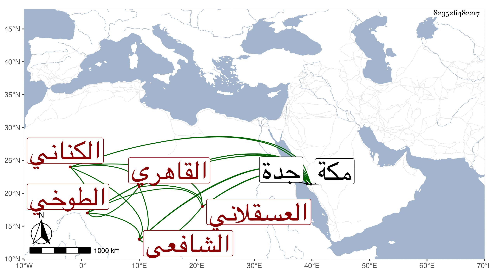

0902Sakhawi.DawLamic.ITO20230111-ara1.EIS1600.823526482217
Biography ID: 823526482217
387
محمد بن أبي بكر محمد بن أحمد بن محمد بن محمد بن عثمان بن موسى المحب ابن التاج الكناني العسقلاني الطوخي ثم القاهري الشافعي الماضي في المحمدين أبوه وعمه المحب . مات أبوه وهو بكنيته أشهر وهو صغير فحفظ القرآن والشاطبية والعمدة والمنهاج الفرعي بعد مختصر أبي شجاع جمع الجوامع وألفية ابن مالك وعرضها على خلق كثيرين واشتغل عند الشريف النسابة والبوتيجي والعلم البلقيني وغيرهم كالبامي والشهاب الأبشيطي أخذ عنه بطيبة وجود القرآن عند الزين عبد الغني الهيثمي وسمع أشياء ولازم التردد إلى بل كتب من تصانيفي جملة وكان يرتزق بالنساخة غالبا مع كون خطه ليس بالطائل والغالب عليه سلامة الفطرة ، وهو أحد صوفية المؤيدية ممن حج غير مرة وجاور . ومات في حياة أمه وقد جاز الثلاثين بجدة في يوم الأربعاء سلخ المحرم سنة سبع وسبعين ونقل منها إلى مكة فوصلوا به ضحى يوم الخميس فدفن بمعلاتها وهو من بيت صالحين وعاشت أمه بعده أزيد من عشر سنين رحمهما الله وإيانا .
